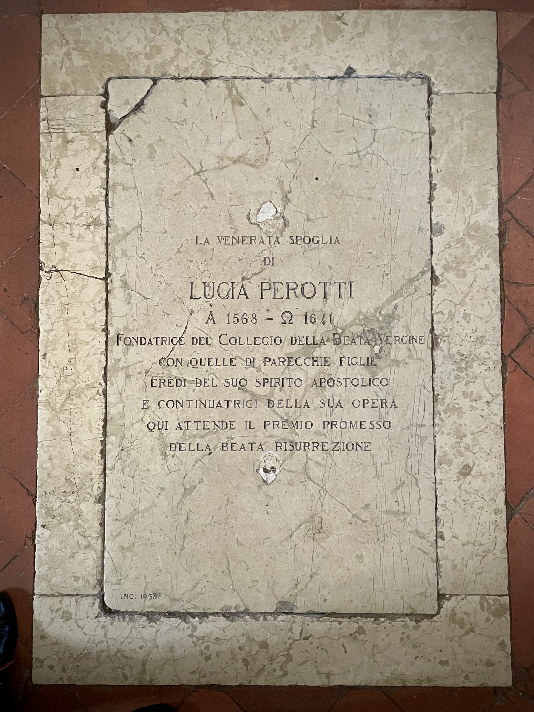

Vespers for the Living: Monteverdi with Jordi Savall
Memoriae sacrum
—Traditional Latin epitaph
Where the shape of a city stirs the shape of a soul
I. Threshold
The threshold between worlds is never a line but a breathing space—that moment when the foot hesitates before crossing, when the familiar dissolves and something unnamed begins to coalesce.
In Cremona, this threshold breathes with particular intensity. Here, where Amati, Guarneri, and Stradivari once bent over their workbenches, the very air seems to hold the memory of wood surrendering to its perfect form.
To arrive here as a string player is to enter a conversation that began centuries before your birth. The stones remember the sound of planes shaving spruce, the patient turning of pegs, the first tentative bow drawn across newly strung gut. This is a city that perfected something—not merely an instrument, but a way of listening to what wood wants to become.
I had not walked these streets since 2012. Returning felt like placing a hand upon a pulse that had never stopped beating, though the rhythm had deepened, grown more complex. The surface of everything—cobblestones worn smooth by countless processions, facades that have weathered five centuries of weather and war—hums with accumulated presence. Nothing here is merely old; everything is seasoned, like the wood of those legendary violins, aged into resonance.
Last night, in the Chiesa di San Marcellino, we performed Monteverdi’s Vespro della Beata Vergine under Jordi Savall’s direction. What follows is not a review of that performance but something more intimate: a meditation on what happened in that space between preparation and release, between the written note and its flowering in air, between the musician’s intention and the music’s own mysterious life.
This is a reverie—not in the sense of idle dreaming, but in the older meaning: a returning, a coming back to something that was always there, waiting.
II. The Maker of Bridges
Claudio Monteverdi arrived in this world in 1567, when the Renaissance was already beginning to question its own certainties. Born in Cremona, he grew up breathing the same air that would later nurture the great violin makers, learning his craft from Marc’Antonio Ingegneri in the very cathedral where the stones still echo with their voices. But Monteverdi was not content to inherit a tradition; he needed to transform it.
By the time he composed the Vespro della Beata Vergine in 1610, he had already begun to reimagine what sacred music could be. This was not liturgical music in the traditional sense—it was devotional, yes, but also declarative. A manifesto written in harmonies, a theological argument made audible. He submitted these Vespers not as liturgical necessity but as artistic proposal, perhaps to win favor in Venice, to move beyond the constraints of the Mantuan court.
Monteverdi understood that he stood at a hinge moment in musical history. The Renaissance had taught him to think vertically—voices rising toward heaven in perfect mathematical proportions. But the emerging Baroque demanded horizontal movement, drama, the recognition that music could be not just cosmic but personal, not just eternal but urgently present.
The Vespers embodies this tension. Ancient psalm tones serve as cantus firmi, anchoring flights of the most adventurous polyphony. Motets drawn from the Song of Songs shimmer with a sensuality that has been transfigured, not denied. This is music that knows it stands between worlds, and instead of choosing sides, it builds bridges.
To perform this music is to become part of that bridge-building. Each time we lift our instruments, each time we shape a phrase, we participate in Monteverdi’s ongoing conversation between what was and what wants to be.
III. Architecture of Evening
The Catholic Vespers service marks the hinge of day—that moment when light begins its retreat and lamps are lit against the gathering darkness. It is the hour of lucernarium, the lighting of the evening lamp, when the community gathers to sing the day toward its rest. Monteverdi’s Vespers for the Blessed Virgin follows this ancient structure: five psalms, the hymn Ave maris stella, and the climactic Magnificat, all woven together with motets and instrumental sinfonias that breathe like spaces between prayers.
But this is no mere setting of liturgical text. This is architecture made audible, space built from time and silence and the trembling of air. Each movement unfolds with the logic of a Renaissance church: grand and intimate simultaneously, ornate yet purposeful, every detail serving the whole while claiming its own particular beauty.
The psalm settings anchor everything. These ancient melodies, worn smooth by centuries of monastic voices, become the foundation upon which Monteverdi builds his extraordinary superstructure. In Dixit Dominus, the opening psalm, the familiar chant emerges from a blaze of instrumental fanfares like a cathedral appearing through morning mist. The old and the new do not compete; they converse.
The motets between the psalms function like the side chapels in a great church—intimate spaces where the soul can pause, gather itself, encounter the divine in more personal terms. Nigra sum draws its text from the Song of Songs: “I am black but beautiful, O daughters of Jerusalem.” Here, the theological becomes erotic, the sacred and the sensual revealed as always having been one conversation, spoken in different dialects.
And through it all, the figure of Mary—not as distant queen but as present intercessor, the one who magnifies not herself but grace, who says yes to what she cannot understand and in that yes makes space for mystery to take flesh.
IV. The Stone Remembers
Her tomb lies flush with the floor, its Latin inscription worn soft by centuries of feet passing over. Lucia Perotti 1568–1641. The dates frame a life that ran almost exactly parallel to Monteverdi’s own, though their paths likely never crossed in any way that history remembers. Yet here, in the Chiesa di San Marcellino, their legacies interweave like voices in a motet.
{: .image-small} The worn inscription of Lucia Perotti’s tomb, where centuries of footsteps have softened the Latin words into meditation
Lucia was born into nobility but chose a different kind of authority. Widowed young, childless, she might have retreated into private grief. Instead, she claimed her sorrow and transformed it into foundation. The story goes that on November 21, 1609, the Virgin appeared to her robed in white light, saying: “Procede et noli timere” — “Go ahead and fear not.” Within months, the Collegio della Beata Vergine was born, an institution dedicated to educating girls regardless of their station.
That year: 1610. The same year Monteverdi was completing his Vespers.
Lucia’s revolution was quiet but radical. In an age when women’s learning was often seen as dangerous, she insisted that education was not privilege but necessity, not luxury but basic human dignity. Her motto, preserved in the archives of her institution: “Magistra debet esse mater amans… corrigat cum dulcedine” — “The teacher should be a loving mother… correct with gentleness.”
Her pedagogy echoes something I recognize from our work with Jordi Savall. Once, early in our collaboration, I confessed my doubts about assuming a leadership role in the ensemble. I told him that real authority, I believed, must arise from mutual respect, not imposition. His response affirmed that principle so completely it became foundational for me—not only in how I approach music, but in how I understand presence itself.
Both Lucia and Monteverdi built spaces where transformation could occur—through beauty, through discipline, through the kind of shared attention that allows individual voices to serve something larger than themselves. Her college, his Vespers: different forms of the same impulse, the same trust that human beings are capable of more than they know.
Walking over her tomb each time I enter San Marcellino, I feel the weight of that trust. Her sleep is not passive but generative, like the silence between notes that makes music possible.
V. The Listening Flame
In our ensemble, we are twelve voices, two violins, viola, violone, cello, viola da gamba, lirone, bass, harp, theorbo, organ, recorders, cornetti, and trombones. These are the forces Monteverdi dreamed for, the exact instrumentation his imagination required. To perform this music with anything less—or more—is to miss its particular breathing, its specific gravity.
But the deeper ensemble is harder to describe. It includes the space itself, the accumulated silence of centuries, the particular way light falls through the windows of San Marcellino at evening, the presence of all those who have sung these words before us. We are part of something larger than our individual contributions, something that was already happening before we arrived and will continue after we leave.
Under Jordi’s direction, something remarkable occurs in the moments when I am not playing. Tacet—from the Latin tacere, to be silent—does not mean absence. It becomes a different kind of presence, a listening so complete it becomes a form of participation. When my bow is not drawing across strings, I am still making music—with my attention, my breathing, my willingness to receive what my colleagues are offering.
These moments of musical silence are among the most profound of my performing life. I am no longer the one creating sound but the one through whom sound passes. I realize that I am not merely physical but spirit, not merely individual but part of an organism that thinks and breathes and remembers together. I marvel at the craftsmanship of my colleagues, astonished that I am not only contributing to the unfolding beauty but privileged to witness it from within.
This is closer to prayer than performance. Each phrase becomes an offering, each silence a form of trust. We dwell within the music not as its masters but as its guests, grateful to be invited into its ongoing conversation with eternity.
The space itself shapes this dwelling. San Marcellino’s unfinished facade—austere, classical, flanked by Corinthian pilasters and vacant niches—conceals a baroque interior that blazes with gold and devotion. A single nave stretches beneath a barrel vault supported by massive timber trusses. There are no aisles to fragment the sound’s journey; it travels uninterrupted, blooming in the open air like visible incense.
Here, our voices do not simply echo—they return transformed, deepened, like prayers that have passed through time and brought back news of eternity. The acoustics are not merely favorable; they are revelatory, turning every sung phrase into a conversation between earth and heaven, between intention and grace.
VI. Voices That Lean Toward Light
The Vespers unfolds like a map of divine encounter, each movement a different terrain of approach to mystery. In Duo Seraphim, two voices become three at the line “Tres sunt”—the Trinity manifesting not as doctrine but as living counterpoint. In Audi coelum, the echo responds from the choir loft like heaven replying to earth, and we hear both the call and its answer, the question and its eternal yes.
This is music that understands intercession not as distant petition but as intimate conversation. Mary, the constant presence threading through every movement, is not the remote queen of traditional devotion but the one who stands close enough to hear whispers, who magnifies not her own glory but grace itself.
Lucia Perotti’s vision joins the score here. Her educational mission was never cloistered withdrawal but radiant engagement. She welcomed the poor, housed the orphaned, taught any girl who came seeking knowledge. Her revolution was acoustic in the deepest sense: she understood that learning was meant to resonate beyond the walls that housed it, to change not just individuals but the larger song of the world.
In the Magnificat that concludes the Vespers, Mary’s song becomes our song: “Magnificat anima mea Dominum”—“My soul magnifies the Lord.” But magnification here is not amplification; it is clarification, the way a lens brings distant light into focus. Mary’s yes to mystery makes space for the impossible to become flesh, for the eternal to find a voice in time.
Singing these words, I understand that we are all magnificat—we are all called to this same clarification, this same willingness to let something larger than ourselves find voice through our particular instruments, our specific offerings.
VII. Star, Gate, and Breath
Throughout the Vespers, Mary appears under many names: Ave maris stella (Hail, star of the sea), Alma Redemptoris Mater (Loving Mother of the Redeemer), Regina coeli (Queen of heaven). But these are not different roles but different angles of vision on the same mystery—the human yes that makes space for divine possibility.
As star, she is navigation, the fixed point by which travelers orient themselves when all other landmarks have disappeared. As gate, she is passage, the opening through which heaven and earth exchange their gifts. As breath, she is the space between words where meaning gathers itself for speech.
Monteverdi’s genius lies in making these theological concepts audible. The music does not describe Mary’s intercession; it enacts it. When the voices weave together in Duo Seraphim, when the echo answers the call in Audi coelum, when the instrumental sinfonias dance between the movements like light playing on water, we are not hearing about divine love—we are participating in it.
The great Marian feast days structure the work: Annunciation, Visitation, Assumption, Coronation. But these are not celebrations of distant events. They are recognitions of what is always happening, always possible, always being born in the space between yes and fulfillment.
VIII. What Remains in the Air
The music ends, but it does not stop. In the silence that follows the final Amen, something continues to vibrate—not sound exactly, but the memory of sound, the shape that the music has carved in the air and in our listening. We sit in that resonance, reluctant to move, knowing that to speak or shift would be to let something precious drain away.
This is where the performance becomes more than performance, where it reveals itself as a form of dwelling. We have not simply played Monteverdi’s Vespers; we have inhabited them, made them temporarily our home. And now, in the lingering quiet, we understand that the music was also inhabiting us, making us its temporary home.
Above us, the vaulted ceiling holds the last vibrations like cupped hands holding water. Below us, Lucia Perotti sleeps in her tomb, waiting, the inscription says, for the promised reward of resurrection. But perhaps it has already come—not as future promise but as present reality, in the continuation of her work through the centuries, in the echo of her choices in our choices, in this very moment when Monteverdi’s lines lift once again in the space where she now rests.
John Berger once wrote that he lived for half a century clothed only in poems, until a wordless encounter taught him how many years of learning by heart had been a preparation for that moment.
To perform this Vespers is to know that feeling: that all your years of practice, of listening, of doubt and faith and the patient acquisition of skill, were preparing you for this breath, this measure, this unfolding.
Music becomes our most faithful garment—not a costume we put on but a skin we grow into. And in the wearing of it, in the dwelling within it, the past ceases to be elsewhere. It becomes the light on a name worn smooth by time. The soft reverberation after a sung “Sancta Maria”. The lift of a hand before the next downbeat.
We become the bridge they never crossed, the conversation they never finished, the echo of their echo in the endless round of voices that lean toward light.
In this way, the Vespers never truly end. They continue in the space between breaths, in the silence between notes, in the listening that remains after the last sound has faded. They continue in us, through us, as us—until the next time we gather, lift our instruments, and give them voice again.
The lamp is lit. The day turns toward evening. The ancient song begins again, as it always does, as it always will, in the space where memory and possibility meet in the eternal now of music making itself heard.